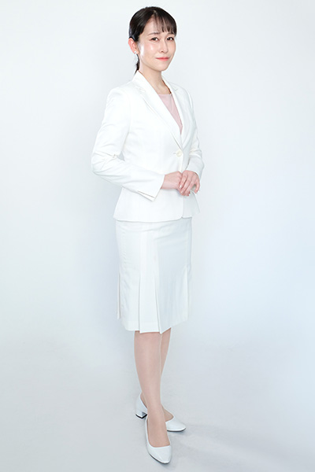

PROFILE
香月 かおり



香月 かおりKaori Kazuki
| カテゴリ | MC/司会、ナレーター、宅録、モデル |
|---|---|
| 地域 | 関東関西 |
| 身長 | 165cm |
| 趣味 | ネイル、料理、ハーバリウム |
| 特技 | マッサージ |
| 資格 | アスリートフードマイスター3級
ハーバリウムコーディネーター 珠算2級 普通自動車免許 国内Bライセンス |
| 参考URL | |
| 音声サンプル | |
| SNS |
経歴
【TV/ラジオ】
- つくばテレビ他「CARXS」リポーター
- FM鳥越アズーリ「教えて！社労士せんせい」パーソナリティ
【VP】
- 日本HP販売パートナー向けソリューション紹介動画ナビゲーター
- 田辺三菱「ユプリズナ」VPナレーション
- シスコシステムズ「CISCO meraki」VPナレーション
- 徳永式視力回復トレーニングVPナビゲーター
- 佛教大学「心不全患者に対するACP」周知動画
- 東急リゾート紹介映像ナビゲーター
- 株式会社アビソル新卒採用向け映像
【オンライン】
- オリックス生命保険オンラインセミナー
- 環境ビジネスフォーラムオンラインセミナー
- カシオハンディターミナル新製品発表オンラインセミナー
- 株式会社シーイーシーオンラインセミナー
- そんぽのいえオンラインハーバリウム講座
- ホストタウンサミット世界のおもてなし料理プロジェクト中継リポーター
- トヨタモビリティ東京「リモートde打ち水大作戦！」オンライン
- BSD LIVE"KiZuNa Street"ライブ配信イベント
- Google新端末オンラインkickoff Training zoomグループミーティング
- 港区 企業と環境展オンライン
【イベント】
- マビノギパーティー
- GI南会津スタートアップイベント
- 港区みなと打ち水大作戦
- 中外ライフサイエンスパーク内覧会
- Alteryイベント
- 第55回日本PTA関東ブロック大会
- 新菱冷熱工業SHINRYOイノベーションハブ見学ツアー
- TTXプレミアムディナー 明日花キララ「キラッとNIGHT」
- 江東区民まつり中央まつり
- 港区MECC打ち水大作戦
- 港区MECC総会
- 横浜WEBステージバーチャルイベント
- 読売自動車大学校イベント
- スクウェアエニックス マンガUPイベント
- 第47回 日本橋・京橋祭り"大江戸活粋パレード"
- ららぽーとLEGO PARKワークショップイベント
- SORACOM Discovery
- 港区企業と環境展
- アロウズフェスティバル
- KDDI総合研究所社内イベント
- アフラック主催なるほど！なっとく！がんを知る教室
- フォルクスワーゲン水戸 原口あきまさスペシャルライブ
- 日野市歴史祭り
- ベントレー横浜プレミアムセレモニーナイト
- アストンマーチンインナー試乗会
- シーボンイベント
- 夢ナビライブ
- ソライズエンジニアリング株式会社採用イベント
- ワンダーフェスティバル冬
- ワンズモールイベント
- ONE PIECE 映画Golden topics公開イベント
- TGC/相模屋
- 野村不動産オーナーズイベント
- acer主催FPSゲーム実況
- ビックカメラ富士通コーナー
- シチズン時計プロモーション
【トークイベント】
- Wedding Park記者発表会＆又吉直樹さんトークショー
- ∞色眼鏡トークショー（ピース又吉直樹、sumikaボーカル片岡健太）
- アフラック がんを知る教室（尼神インター誠子）
- 一乗谷朝倉氏遺跡博物館 開館1周年イベント（春風亭昇太）
- キャラクターグリーティング（ハローキティ、ミャクミャク）
【フォーラム/セミナー】
- 環境ビジネスフォーラム
- Sansan Innovation Summit
- 日経プレミアムカンファレンス
- インターンシップ＆仕事研究セミナー
- WEB3 ITシンポジウム
- ガートナーデータ＆アナリティクスサミット
- サイボウズdays
- Cisco Connect Japan
- TISビジネスサミット
- RASUK Cloud フォーラム
- SUNG JAPAN セミナー
- VERITAS TECHシンポジウム
- VERITAS vision solution Day
- ガートナージャパンシンポジウム＆懇親会
- ガートナーアウトソーシング＆リスク・マネジメント
- ガートナーカスタマーサミット
- Adobeセミナー
- Adobe MAX JAPAN
- シトリックスセミナー
- イトーキプレゼンテーション129
- アストラゼネカOvarianCancerExpartMeeting in Tokyo
- アストラゼネカ山梨泌尿器癌勉強会
- 第49回日本人工関節学会
- 栃木乳癌学会
- NTTコミュニケーションズ会社説明会「Communications Cafe」
- みなと環境にやさしい事業者会議総会
- IWA世界会議
- 中堅企業 成長戦略勉強会キックオフセミナー
- 医学部進学フォーラム
- Autodesk University Japan 分科会
- アンシステクノロジーデイ
- Lead Initiativeセミナー
- 某ファイナンシャルグループ キャリアアップの会
【式典/表彰式/懇親会】
- ジャパンパトロール警備保障株式会社50周年記念式典＆祝賀パーティー
- 株式会社シーエムエンジニアリング周年イベント
- ワンスマ(ワンデイスマイル)走行会表彰式
【展示会】
- 国際モダンホスピタルショウ/メドレー（パシフィックメディカル）
- JAPAMドラッグストアショー/ファイントゥデイ（SENKA）
- SuperCity SmartCity KANSAI/村田製作所
- CSPI EXPO/アイチコーポレーション
- ニコニコ超会議/サンエックス
- 危機管理産業展/主催者・出展者セミナー
- アグリビジネス創出フェア/主催者・出展者セミナー
- 土壌・地下水浄化技術展/大林組
- 建設技術展/大林組
- ハイウェイテクノフェア/大林組
- リテールテック/東芝テック
- 国際ロボット展/椿本チエイン
- PV EXPO/LONGi
- オルガテック東京/富士ビジネス
- 国際ウェルディングショー/フィーチェップ
- メンテナンス・レジリエンス/クボタ環境エンジニアリング
- ジャパン建材フェア/パナソニック
- メンテナンス・レジリエンスOSAKA/ラヴォックス
- PV EXPO/航天機電
- 釣りフェスティバル/がまかつ
- 東京オートサロン/Moty's
- エコプロ/日本製鉄
- シーテック/バンダイ
- ケーブル技術ショー/ジャパンケーブルキャスト
- 東京おもちゃショー/タカラトミー「ひみつ×戦士ファントミラージュ！」
- HR EXPO/Google
- 設計製造ソリューション/アンドール
- CYBER TECH TOKYO/デロイトトーマツ
- 東京レプタイルズワールド/アリオンジャパン
- ビューティーワールドジャパン
- ヤマダ電機フェア/東芝
- セキュリティーショー/Panasonic
- FOOOMA JAPAN/ニチラク機械
- フィッシングショー東京＆大阪/がまかつメインステージ
- ナイス耐震博/Panasonic
- インターロップ/A10
【プライベートショー】
- Panasonic100周年クロスバリューイノベーション
- Panasonic SUPER BOX
- Panasonic Wonder JAPAN solution
- 三菱電機 暮らしと設備の総合展
- Dynabook Day
- TOSHIBA OPEN INNOVATION FAIR
- イオントップバリュ展示会
- 日東工業内覧会
- マツモト産業プライベートショー
【モデル】
- ショップチャンネル/カシオ計算機株式会社モデル
- 東芝ライフスタイルHP＆カタログモデル
- 東芝ライフスタイル ウェルプロモーション(掃除機トルネオ)
- 新菱冷熱工業WEBcm
- NEC「顔認証アプライアンスサーバ」主婦役
- 八芳園ブライダルフェアウェディングショーモデル
- 日本ダービーイベントモデル
- 資生堂「エアリーフロー」PR動画モデル
- 展示会被写体モデル
- 撮影会モデル
- カレンダーモデル
- 着付けモデル
- 袴パンフレットモデル
- 道の駅ガイドブック モデル
- 美少女図鑑モデル
- 美人時計 モデル
- 通販VTR スチールモデル
- 美容商品 モデル
- 女性自身 特集ページモデル
【レースクイーン】
- アジアパシフィックラリー&全日本ラリーIMMENS MOTORSPORT&TEAM NENC
- スーパー耐久BIRTH RACING PROJECT
- ブランパンGTシリーズアジアKIZASHI×SACCESS RACING
- D1GP WANLI FATFIVERACING 2016
- k-tai JOY耐 ミニJOY耐
- 全日本ラリー&全日本ジムカーナ2014～2015
- スーパー耐久&86/BRZレース2014～2015
- 2017年度スーパー耐久TEAM BRIDE 人気投票フェアリー賞受賞
- 2015年度スーパー耐久人気投票Rd.3富士戦1位フェアリー賞受賞